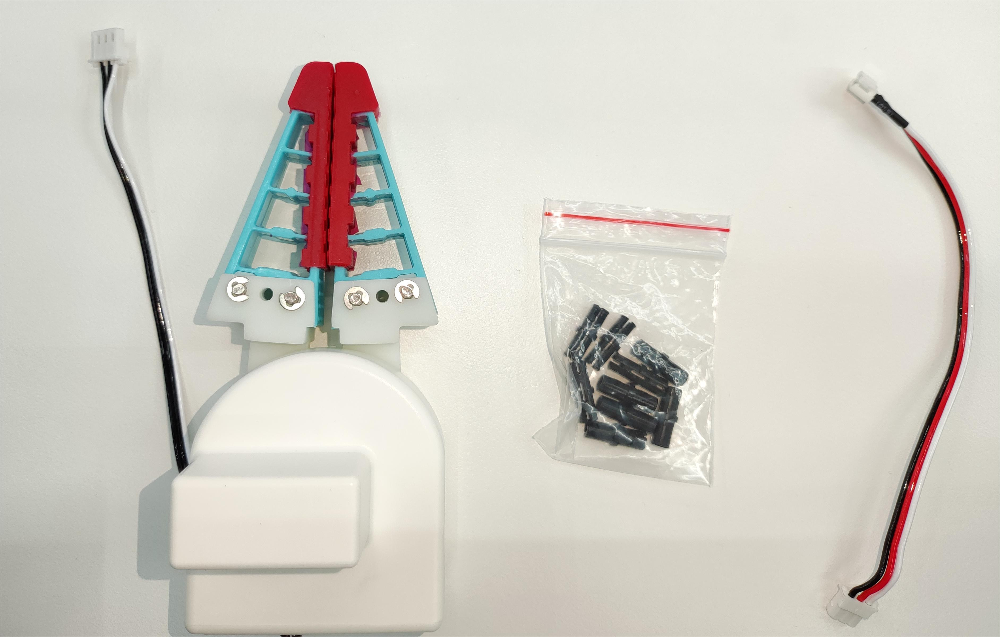
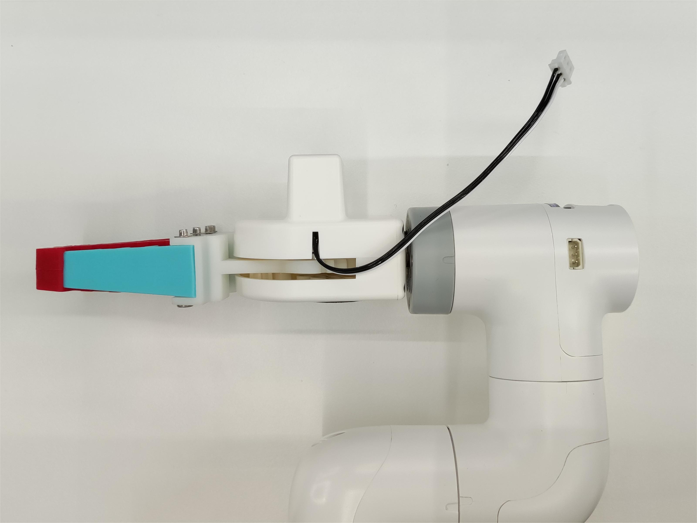

Flexible Gripper - Open-leg Type
Applicable models: myCobot 280, myPalletizer 260, mechArm 270, myBuddy 280
Product Image


Specifications:
| Name | mycobot280 Open-leg Gripper |
|---|---|
| Model model | myCobot Open-leg Gripper |
| Process | Photosensitive resin |
| Color | White |
| Repeatability | ±1mm |
| Service life | One year |
| Drive mode | Electric |
| Fixing mode | Lego connector |
| Environmental requirements | Normal temperature and pressure |
| Control interface | Serial control |
| Applicable equipment | ER myCobot 280 series, ER myPalletizer 260 series, ER mechArm 270 series, ER myBuddy 280 series |
Flexible gripper: Used to grip objects
Introduction
- Traditional industrial suction cups need to suck the flat surface of the material. In more and more working conditions, the suction surface is easy to damage the panel or components. The soft-touch gripper grabs the edge and easily transports the panel without marks or damage, ensuring that the product surface is flawless and improving the yield rate.
- The modular design of the soft-touch gripper is light in weight and can be freely arranged and combined according to the size of the panel.
- The clamping force of traditional cylinders is generally large, and the force is difficult to control. The edge of the clamped panel is easy to be clamped and warped. The single-finger clamping force of the flexible gripper is precisely controllable and will not clamp fragile workpieces.
Working Principle
- The flexible gripper is an innovative bionic flexible gripper developed by researchers imitating the shape of the arms and legs of a starfish. The "fingers" of the soft gripper are made of flexible polymer silicone material, which can bend and deform by inflation. It can adaptively wrap around the target object like a starfish, and can complete the flexible and non-destructive grasping of irregular and fragile objects.
Applicable objects
- Any object of any shape within a reasonable size
Installation and use
- Check whether the accessories package is complete: Lego connector, gripper with connecting wire, extension wire

- Gripper installation:
Structural installation: Insert the Lego connector into the reserved socket of the gripper. You can choose two different directions for installation as needed:

Align the gripper with the connector inserted into the socket at the end of the robot arm and insert it:

- Electrical connection:
Connect the extension wire to the gripper:
Insert the robot control interface:


Programming development
- M5 version:
from pymycobot import MyCobot280
import time
# Initialize a MyCobot280 object
mc = MyCobot280("COM3", 115200)
# The following three methods can control the gripper to open-close-open
# Method 1:
mc.set_gripper_state(0, 80)
time.sleep(3)
mc.set_gripper_state(1, 80)
time.sleep(3)
mc.set_gripper_state(0, 80)
time.sleep(3)
# Method 2:
# mc.set_gripper_value(100, 80)
# time.sleep(3)
# mc.set_gripper_value(0, 80)
# time.sleep(3)
# mc.set_gripper_value(100, 80)
# time.sleep(3)
# Method three:
# mc.set_encoder(7, 2048, 20)
# time.sleep(3)
# mc.set_encoder(7, 1500, 20)
# time.sleep(3)
# mc.set_encoder(7, 2048, 20)
# time.sleep(3)
- Pi version:
from pymycobot import MyCobot280
from pymycobot import PI_PORT, PI_BAUD # When using the Raspberry Pi version of mycobot, you can reference these two variables to initialize MyCobot280
import time
# Initialize a MyCobot280 object
mc = MyCobot280(PI_PORT, PI_BAUD)
# The following three methods can control the gripper to open-close-open
# Method 1:
mc.set_gripper_state(0, 80)
time.sleep(3)
mc.set_gripper_state(1, 80)
time.sleep(3)
mc.set_gripper_state(0, 80)
time.sleep(3)
mc.set_gripper_state(0, 80)
time.sleep(3)
# Method 2:
# mc.set_gripper_value(100, 80)
# time.sleep(3)
# mc.set_gripper_value(0, 80)
# time.sleep(3)
# mc.set_gripper_value(100, 80)
# time.sleep(3)
# Method 3:
# mc.set_encoder(7, 2048)
# time.sleep(3)
# mc.set_encoder(7, 1500)
# time.sleep(3)
# mc.set_encoder(7, 2048)
# time.sleep(3)
Save the file and close it, return to the command line terminal, and enter:
python grip.py
You can see the gripper open-close-open